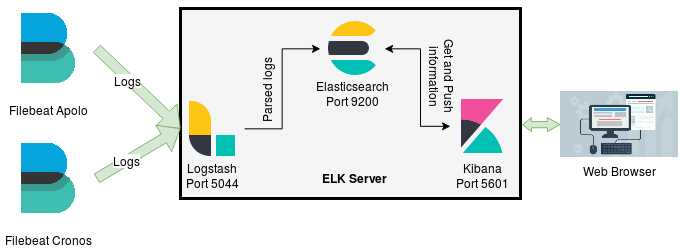

Installation and Configuration
Note
It is very important to make the cluster nodes visible between them by their DNS. Otherwise, the services might not properly start. If this happens, dig into the log files and find out the problem.
Correctly configure the date and time of the cluster. Otherwise, visualizing the logs in Kibana might be a problem. This due that the log timestamp will be on a different date of that of the Kibana server.
Install Java JDK 8, more recent versions may have compatibility problems.
Use the same version for Logstash, Elasticsearch, Kibana, and Filebeat to avoid compatibility problems.
Also, when reading the guides check that the guide version is compatible with the version of the ELK stack in use.
In case of having more than 500MB in logs, the RAM used by Logstash and Elasticsearch is something to consider. By default 1GB for heap, plus the jvm (which runs some other things), so more or less 2.0 - 3.0 GB of RAM. Therefore ensure at least 4-6GB of RAM (even more when having gigabytes of logs) in the server that Elasticsearch and Logstash will be installed.
If RAM is not a problem, and there is a need for more RAM on Elasticsearch or Logstash, increase the heap size by modifying the
jvm.optionsfile, which is usually located under/etc/<service>or under/usr/share/<service>/config. Look for the options-Xms1gand-Xmx1gand change the 1g to an the value needed. The chosen value should be the same in both options, for more information about the heap read here.Install, configure, and start the services in the following order, then repeating some steps will be avoided, as well as some problems. Note that this order is the same as the one in the Ansible role
elk.If any service fails or is working in an unexpected way check the logs. They are usually under
/usr/share/<service>/logsor under/var/log/<service>.
The architecture in which the ELK Stack was installed is the following.
Although we are using this architecture, it may be modificated in any way, just pay close attention to the configuration files.
Also, it is important to note that the stack of applications was installed on CentOS 7 using Ansible. Therefore, in the next subsections, there will be an explanation of the Ansible roles used to install and configure each of the ELK Stack components. The directory structure of the Ansible project is described here.
Before proceeding to the installation of each main component, it is needed to add the ELK’s repository to the rpm’s repositories.
# roles/elk/tasks/add-elk-repo.yml
---
- name: Download public signing key
shell: rpm --import https://artifacts.elastic.co/GPG-KEY-elasticsearch
- name: Add elk repository file
template:
src: "etc/yum.repos.d/elk.repo.j2"
dest: "/etc/yum.repos.d/elk.repo"
owner: root
group: root
mode: 0644
This playbook basically adds the ELK’s gpg signing key to rpm and takes a template, roles/elk/templates/etc/yum.repos.d/elk.repo.j2, to render it in the /etc/yum/repos.d/ directory, which is where rpm looks for its repositories. The template file is this:
# roles/elk/templates/etc/yum.repos.d/elk.repo.j2
[elastic-{{ elk_version }}]
name=Elastic repository for {{ elk_version }} packages
baseurl=https://artifacts.elastic.co/packages/{{ elk_version }}/yum
gpgcheck=1
gpgkey=https://artifacts.elastic.co/GPG-KEY-elasticsearch
enabled=1
autorefresh=1
type=rpm-md
The {{ elk_version }} jinja variable refers to the version of the desired stack. In this case 7.x. This variable must be passed as an argument when running Ansible or have it defined somewhere in the Ansible project. For more information about variables go to the Ansible’s documentation.
Also, it is needed to install Java 8 and the main components (Elasticsearch, Logstash, Kibana) packages.
# roles/elk/tasks/install-elk.yml
---
- name: Install Java
yum:
name: java-{{ java_version }}-openjdk-devel
state: present
- name: Install logstash-elasticsearch-kibana
yum:
name:
- logstash
- elasticsearch
- kibana
state: present
The variable {{ java_version }} represents the java version used, in this case (and to ensure compatibility) 1.8.0.
Elasticsearch
After installing the needed package, Elasticsearch is configured like this:
# roles/elk/tasks/config.yml
---
- name: Configure elasticsearch
template:
src: "etc/elasticsearch/elasticsearch.yml.j2"
dest: "/etc/elasticsearch/elasticsearch.yml"
owner: root
group: root
mode: 0644
notify: enable_restart_elasticsearch
The Elasticsearch main configuration file, which is the template roles/elk/templates/etc/elasticsearch/elasticsearch.yml.j2, is rendered in /etc/elasticsearch/. The template can be found here. In that template, there is a variable called {{ machine }}, which is rendered as the hostname of the ELK server, in this case elk. It can be changed as needed, but from now on in this guide, elk is what will be used. Note that, when the configuration file is placed, a notify is made so that the Elasticsearch service is started/restarted. The notify handler looks like this:
# roles/elk/handlers/main.yml
---
- name: enable_restart_elasticsearch
systemd:
name: elasticsearch
state: restarted
enabled: yes
Note
Note that the identifier given to the notify action in the configuration task must be same as the identifier given to the handler.
Logstash
After installing the needed package, Logstash is configured like this:
# roles/elk/tasks/config.yml
---
- name: Configure logstash
copy:
src: "etc/logstash/{{ item }}"
dest: "/etc/logstash/{{ item }}"
mode: 0644
with_items:
- pipelines.yml
- logstash.yml
notify: enable_restart_logstash
- name: Logstash main pipeline configuration file
template:
src: "etc/logstash/conf.d/main_pipeline.conf.j2"
dest: "/etc/logstash/conf.d/main_pipeline.conf"
owner: root
group: root
mode: 0644
notify: enable_restart_logstash
The first task copies two configuration files, pipelines.yml, and logstash.yml to /etc/logstash. The former indicates to Logstash where to find our pipelines configuration files. It can be found here. The latter is the main configuration file for Logstash. It can be found here.
The second task takes a template, roles/elk/templates/etc/logstash/conf.d/main_pipeline.conf.j2, and renders it in the pipelines directory, /etc/logstash/conf.d. The template represents the description of the main pipeline, that is, inputs, filters, and outputs. It can be found here.
Note
Logstash Filters: It is important to know the version of the filter plugins being used, so that the proper documentation can be found.
Kibana
After installing the needed package, Kibana is configured like this:
# roles/elk/tasks/config.yml
---
- name: Configure kibana
template:
src: "etc/kibana/kibana.yml.j2"
dest: "/etc/kibana/kibana.yml"
owner: root
group: root
mode: 0644
notify: enable_restart_kibana
The Kibana main configuration file, which is the template roles/elk/templates/etc/kibana/kibana.yml.j2, is rendered in /etc/kibana/. The template can be found here. Also, when the configuration file is placed, a notify is made so that the Kibana service is started/restarted. The notify handler looks like this:
# roles/elk/handlers/main.yml
---
- name: enable_restart_kibana
systemd:
name: kibana
state: restarted
enabled: yes
Indexes and Mappings
After installing and configuring Kibana, it is time to give structure to our logs and create/import the dashboards and visualizations needed:
Access the web interface through http://elk:5601. To access it using the domain name
elkremember to make the cluster nodes visible by their DNS’, in this case, the node where Kibana is installed.Organize the information. This will help plotting all the data easily. To add a new logging source see the section below Adding a new Logging Source.
Warning
Create the indexes and the mappings BEFORE sending any data to Elasticsearch, otherwise, data would end up in unexpected indexes.
Create indexes and mappings, that is, give types and format to the data.
In the Dev Tools section, copy and paste the contents of the index and mappings
file, then select it all and click on RUN. These mappings can be used as a reference to create more mappings.To easily see the mappings go to: Management -> Index management -> Click on the desired index -> Mapping.
Create the dashboard and visualizations.
Go to the Management section, then, go to the subsection Saved Objects, then, Import, and import the dashboards and visualizations
file.Note
To export the visualizations and dashborads to a json format, remember to check the every saved object option. Otherwise some visualizations may depend on other objects that might not be exported, ending up with errors when importing them again.
In the section Management -> Kibana -> Index Patterns select one (no matter which one) index pattern and press the star button to make it the default one.
Filebeat
Recall that in this case Filebeat is installed in nodes different from the ELK Server, the architecture used here is on Installation and Configuration.
So, the installation playbook looks like this:
# roles/master/tasks/config.yml
---
- name: Download public signing key
shell: rpm --import https://artifacts.elastic.co/GPG-KEY-elasticsearch
- name: Add elk repository file
template:
src: "etc/yum.repos.d/elk.repo.j2"
dest: "/etc/yum.repos.d/elk.repo"
owner: root
group: root
mode: 0644
- name: Install filebeat
yum:
name: filebeat
state: present
- name: Configure filebeat
template:
src: etc/filebeat/filebeat.yml.j2
dest: /etc/filebeat/filebeat.yml
owner: root
group: rot
mode: 0644
notify: enable_restart_filebeat
As previously explained, the three first tasks are for adding the ELK’s repository and installing the main component package. The last task is for configuring Filebeat. It takes a template file that contains the Filebeat main configuration, basically, where it will take the logs from. The template file can be found here. Then, after Filebeat is configured, a notify is sent to a handler to start/restart the Filebeat service. The handler looks like this:
Note
Note that the folder under roles/ is not elk/ anymore. It is master/ because the idea is to install the log collector in the master nodes, which then, will start sending logs to the elk server.
# roles/master/handlers/main.yml
---
- name: enable_restart_filebeat
service:
name: filebeat
state: restarted
enabled: yes
Make sure that the paths to the logs given in filebeat.yml are correct. Everythin is correct if data can be seen in Kibana. Go to the Discover section, select some index pattern and select a time window, something similar to 1 month ago, or change it as needed. This time window represents the time range that Kibana uses to query the logs to Elasticsearch. For example, if to analyze the last year logs, choose 1 year ago -> now.